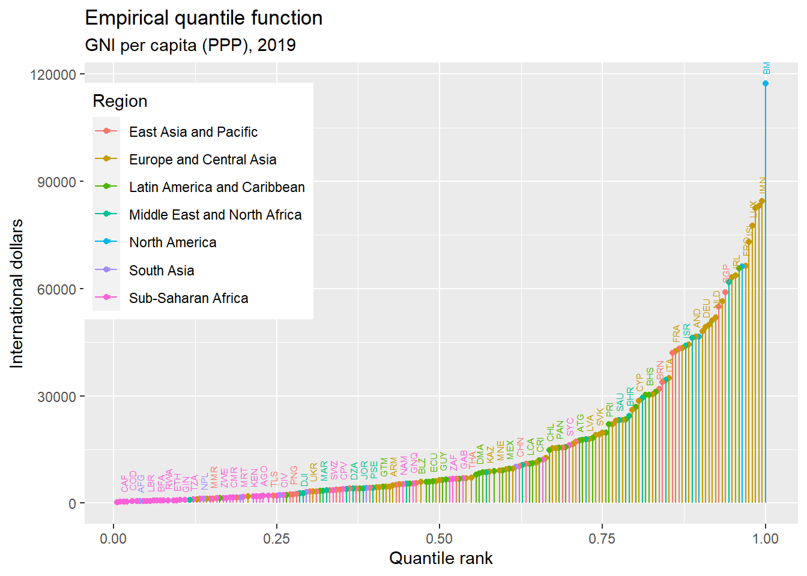
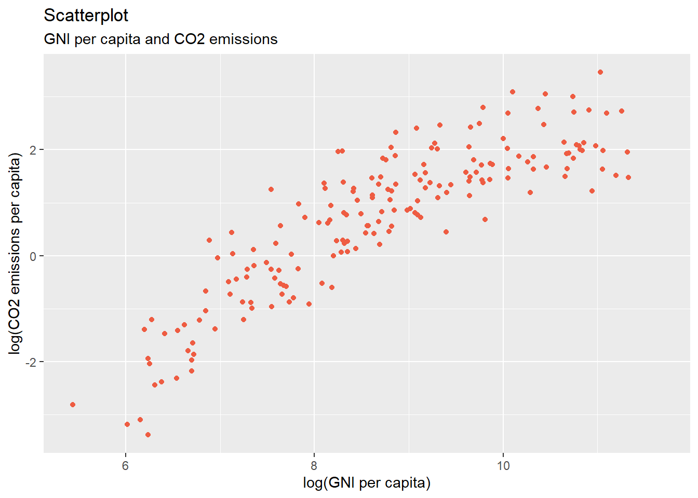
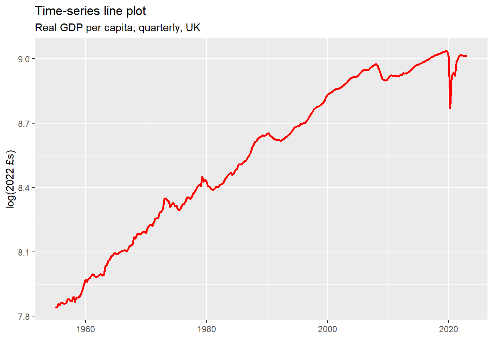
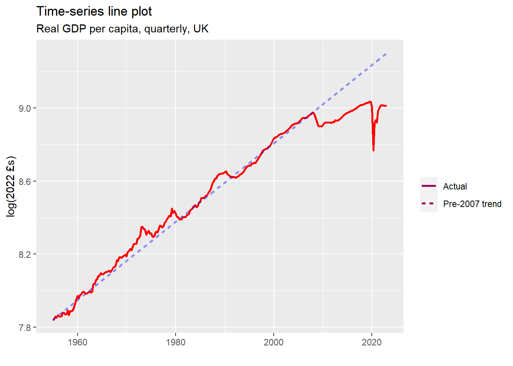
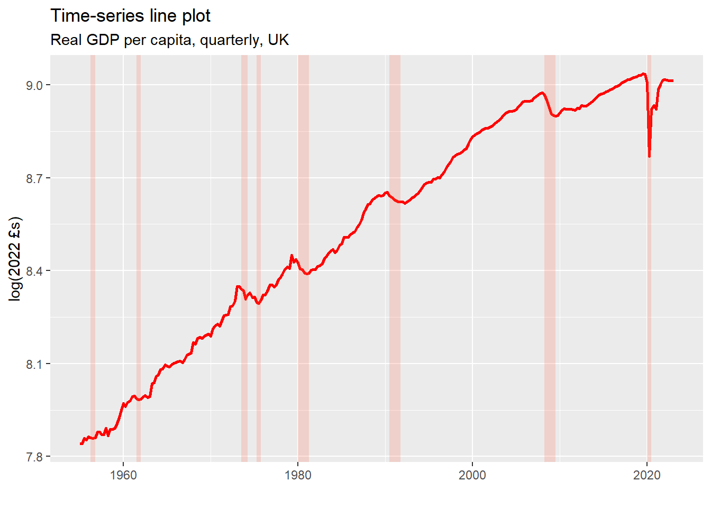
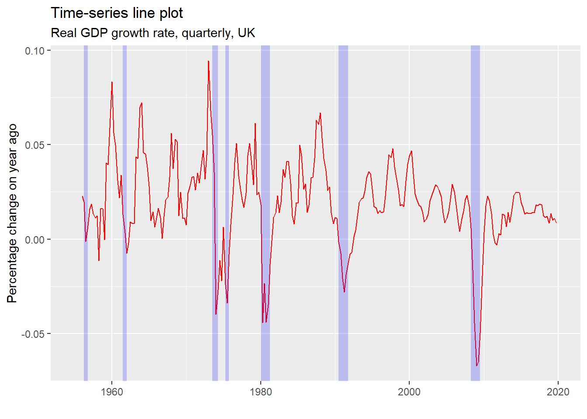
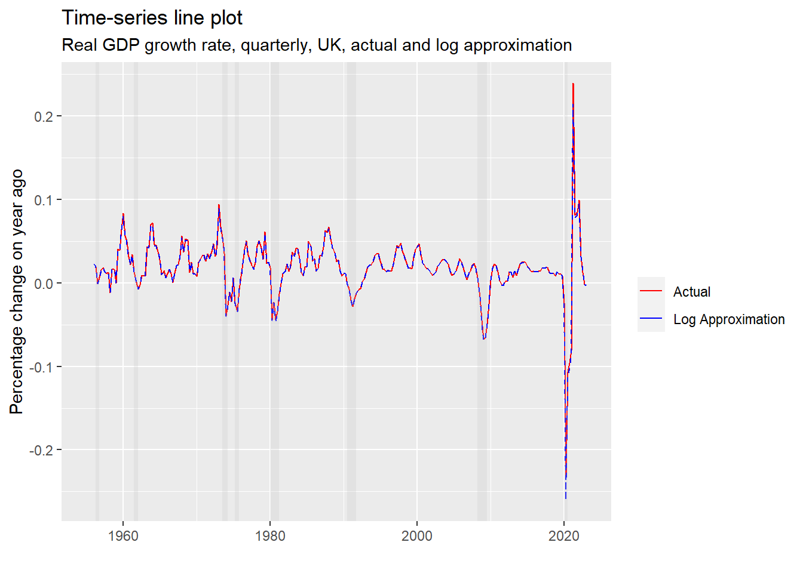
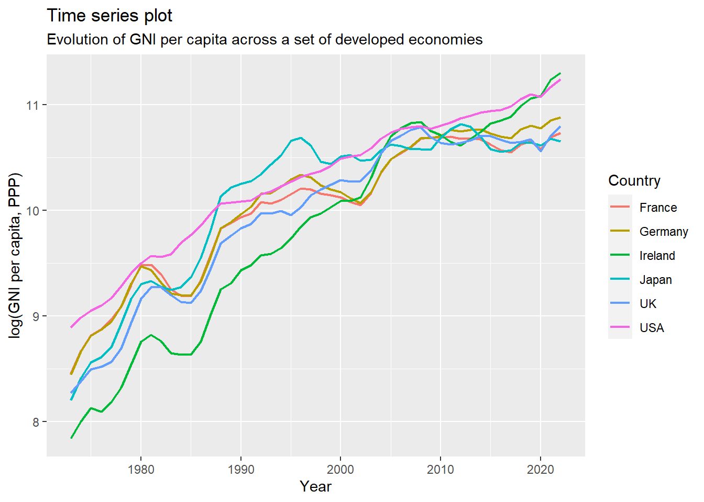
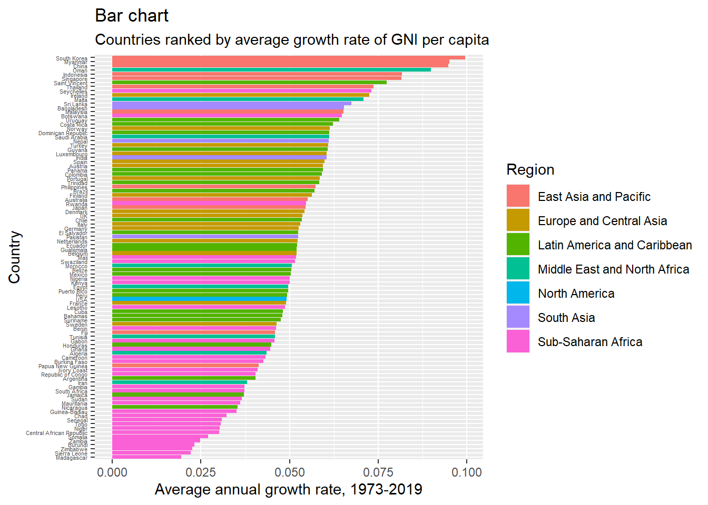

Chapter 2 Topic 1: GNI per capita across countries and over time
This document uses data on GNI per capita (PPP)1 from the World Bank’s World Development Indicators database to provide examples of representing data.
The data is analyzed using R and the document shows all R codes used, together with the outputs from the code (such as graphs and tables). The document should be fully replicable, in the sense that if you run all the blocks of code in your own R installation (or in the cloud) in the order that they appear on the document, you should get identical results. That being said, a complete introduction to R is beyond the scope of this course and not all of the code will be explained in detail. You are nonetheless strongly encouraged to run the code yourself, which will hopefully enable you to learn intuitively key aspects of the syntax of the language. Still, some parts of the document will include relatively advanced code, so do not worry if you do not understand everything (or even most of the code).
For ease of replication, all the data used in the documented is available as an Excel file data_ch1.xlsx with different datasets saved as different tabs. To replicate the rest of the document, download the file and place it inside a folder on your computer. Then set the working directory in R to the folder where you placed the file:
In addition, run the following code to install all the R libraries that will be used for the analysis:
install.packages("readxl")
install.packages("tidyr")
install.packages("dplyr")
install.packages("ggplot2")
install.packages("forcats")
install.packages("stringr")
install.packages("maps")
install.packages("knitr")library(readxl)
library(tidyr)
library(dplyr)
library(ggplot2)
library(forcats)
library(stringr)
library(maps)
library(knitr)2.1 Understanding your data
Prior to analyzing data it is important to understand the structure of data used.
2.1.1 Cross-sectional, time-series, and panel data
One important aspect of this is whether the data is cross-sectional, time-series, or panel.
- Cross-sectional data consists of observations on several subjects (such as individuals, firms, countries) at a single point or period of time.
- Time-series data consists of observations of a single subject over several points or periods of time.
- Panel (or longitudinal) data consists of observations on several subjects over several points or periods of time. It has both cross-sectional and time-series dimensions.
The main dataset that we use contains observations of GNI per capita for 212 countries over 48 years, and is therefore panel data.
To better understand data structures, however, let’s start with a small sub-sample of the data which only tracks 4 countries for a period of 3 years. This “mini-data” is stored in the first sheet of the Excel file data_ch1.xlsx. Load this to R and allocate it to a dataframe called data:
The “mini-data” includes information on 4 countries, which vary across rows. In addition, it includes the country’s region in the second column. Finally, the value of GNI per capita (PPP) for years 2019-2021 is represented in separate columns, labeled by the year. Note that there is some missing data (the GNP per capita of Turkmenistan in 2020 and 2021).
2.1.1.1 Panel data - long and wide form
When panel data is structured so that cross-sectional units vary across rows and time periods across columns (as above) it is said to be in wide form. While wide form is seemingly natural way to arrange data, for most computational purposes it is more appropriate to arrange panel data in long form - i.e., collapsing the time period so that a row of the data now corresponds to a pair of cross-sectional at a specific period of time:
long.data <- data %>%
pivot_longer(
cols = `2019`:`2021`,
names_to = "Year",
values_to = "GNIpc"
)
long.data2.1.1.2 Cross-sectional data
An example of cross-sectional data, is the subset of the panel data above, at a particular year only. It has the following structure:
In the context of our dataset, cross-sectional data is appropriate for understanding differences in living standards (measured by GNI per capita (PPP)) between countries (and between and within regions) at a specific point in time.
2.1.1.3 Time-series data
An example of time-series data, is the subset of the panel data above, for a particular country only. It has the following structure:
In the context of our dataset, time-series data is appropriate for understanding the dynamic evolution of living standards (measured by GNI per capita (PPP)) in a given country over time.
As panel data has both cross-sectional and time-series dimensions, it is appropriate for analyzing both cross-country differences and dynamic evolution of living standards over time.
2.1.2 Categorical and quantitative variables
Another important aspect of the data is the nature of the variables in it. A complete discussion of the types of variables and data types in R is beyond the scope of the document but a key distiction relevant for the subsequent analysis is between quantitative and qualitative (categorical) variables.
To set ideas, consider the cross-sectional mini-dataset cs.data obtained above, consisting of 4 variables - Country, Region, Year and GNIpc.
- GNI per capita (measured in PPP adjusted international dollars) is clearly a quantitative variable. If we summarize the variable in R we can see that it has been correctly identified as quantitative
## Min. 1st Qu. Median Mean 3rd Qu. Max. NA's
## 2570 23680 44790 45423 66850 88910 1- Region is clearly a categorical variable, as there is no single natural order of its possible values. We can see that among the four countries in the mini-dataset, three are from Europe and Central Asia, and one from South Asia. However, if we summarize the variable in R
## Length Class Mode
## 4 character characterwe see that it is classified as character (meaning text or string) which means that R does not recognise that three of the countries are from the same region. In such situations, it is important to explicitly tell R that the variable is categorical. In R, categorical varialbes are referred to as factor variables. We can declare the variable to be categorical as follows:
Now note that a summary of the variable
## Europe and Central Asia South Asia
## 3 1correctly recognises that the data consists of 3 countries from Europe and Central Asia and one country from South Asia.
While this discussion is not necessarily crucial for understanding the data representations in the rest of the document, it is important for understanding some junks of code, as we will often have to declare the type of variables.
2.1.3 Structure of document
In the remainder of this document, we will illustrate how individual cross sections, individual time series, or the whole panel dataset can be utilized to insightfully represent information from the data.
The following code cleans the R environment so that the dataframes used in this section are no longer loaded:
2.2 Representing cross sectional data: Cross-country differences in living standards in 2019
This section uses a cross section of the panel dataset for 2019 only, and presents examples of insightful ways of representing this data, with view of understanding differences in (distribution of) living standards as measured by GNI per capita (PPP), across countries in 2019.
2.2.1 Loading data
First, to obtain cross-sectional data for 2019, we can load the full panel dataset in long form (found in the third sheet of the data_ch1.xlsx Excel file) and then only keep observations for 2019.
# Load full panel dataset in long form
longdata <- read_excel("data_ch1.xlsx", sheet = "gnipcppp_long")
# Obtain a cross-section for Year 2019 only, and allocate to dataframe `csdata`
csdata <- subset(longdata, Year==2019)
# Prepare by declaring `Country`, `Code` and `Region` to be factor (or categorical) variables
csdata$Code <- as.factor(csdata$Code)
csdata$Region <- as.factor(csdata$Region)
csdata$Country <- as.factor(csdata$Country)
# Remove full panel dataset from memory
rm(longdata)For completeness, the full cross sectional dataset we work with is presented in the following table
The dataset contains 212 observations (rows of data) on 5 variables (columns). An observation corresponds to an individual country. Variables are as follows:
- Country is a categorical (factor) variable identifying the country.
- Code is a categorical (factor) variable containing the country code - a standard 3-letter identifier of a country. It contains exactly the same information as Country, so adds nothing further to the information in the dataset. Nonetheless, in some representations below we will be interested in identifying individual countries in graphs, and the country code may be more compact label for the country than its name.
- Region is a categorical (factor) variable, identifying a country’s region according to the World Bank’s standard classification of countries by regions. We will see more about that below. However, the presence of data on region adds a meaningful new dimension to the data as it allows us to represent not only features of the distribution of living standards across the world overall, but also between and within regions.
- Year lists the year of observation. The variable is inherited from the original panel dataset. However, it equals 2019 for all observations in the cross section. Given the lack of variation, it contains no meaningful information for the purposes of the following representations (aside from the fact that we are looking at distributions in 2019 which we already know).
- Finally, rGNIpc corresponds to GNI p.c. (PPP) - our main object of interest - and is a numeric variable. It is measured in 2022 international dollars - a counterfactual currency which is constructed as if 1 international dollar has the same purchasing power in each country (of course, imperfectly).
2.2.2 Summary of key variables
To get a feel of the data, let’s summarize two of the key variables2:
| x | |
|---|---|
| East Asia and Pacific | 34 |
| Europe and Central Asia | 57 |
| Latin America and Caribbean | 41 |
| Middle East and North Africa | 21 |
| North America | 3 |
| South Asia | 8 |
| Sub-Saharan Africa | 48 |
As we can see countries are categorized into 7 regions based on World Bank’s region classification. We can see that different regions include different numbers of countries. For example, there are only three countries in North America (by inspection Bermuda, Canada and the United States). Most countries (57) are in the region of Europe and Central Asia.
## Min. 1st Qu. Median Mean 3rd Qu. Max. NA's
## 230 2195 6435 15890 19693 117280 16We can see that GNI per capita is unevenly distributed between countries, ranging from 230 international dollars per year to 117280 international dollars per year. The average GNI per capita in the sample - 15890 - is above the median - 6435. Data is not available for 16 countries.
2.2.3 Maps (for fun)
Given that the unit of observation is a country, a (possibly) attractive way of visualizing cross-country differences, is through a map.
The code below downloads an open-access geographic dataset of country coordinates which we can merge with our current data and produce a map. While the code is short , what happens under the hood is conceptually complex so we will make no attempt to explain the code. If you are interested in learning how to produce maps like this yourself, you can take a look at the discussion on the maps package website.
# Load world map data from server
world <- map_data("world")
# Merge world map data with GNI data
gnimap.data <- inner_join(world, csdata, by=c("region"="Country"))
# Set a simple map theme
plainmap <- theme(
axis.text = element_blank(),
axis.line = element_blank(),
axis.ticks = element_blank(),
panel.border = element_blank(),
panel.grid = element_blank(),
axis.title = element_blank(),
panel.background = element_rect(fill = "white"),
plot.title = element_text(hjust = 0.5)
)Once we have allocated the merged data into a new dataframe, gnimap.data, containing information on both geography and GNI per capita, we can plot a map as follows:
ggplot(data = gnimap.data, mapping = aes(x = long, y = lat, group = group)) +
coord_fixed(1.3) +
geom_polygon(aes(fill = rGNIpc)) +
scale_fill_distiller(palette ="Blues", direction = -1, name="international $") +
ggtitle("GNI per capita, PPP (2019)") + plainmap
Notice that the colour (shade of blue) of each country corresponds to its GNI p.c. (PPP) as noted in the legend. While a map is an informative way to represent the geographic variation in GNI per capita, there are many aspects of the distribution which are not so easy to observe and would be better visualized later in the document.
For the purposes of understanding our data, we next plot a map showing how the regions in our data (as categorised by the World Bank) are defined:
ggplot(data = gnimap.data, mapping = aes(x = long, y = lat, group = group)) +
coord_fixed(1.3) +
geom_polygon(aes(fill = Region)) +
ggtitle("Regions by World Bank classification") + plainmap 
This is all we are going to say about maps at this stage. Before proceeding further, we remove objects that will no longer be needed from the R environment:
Also, for the purpose of some of the representations later it would be useful to remove observations with missing values of GNI pc from the dataset:
Note that this leaves us with a sample of 196 countries from the initial 212.
2.2.4 Histograms
A histogram of a random variable is a graph which divides the support of the variable, plotted on the horizontal axis, into a number of equally wide “bins”, with the height of each bin (on the vertical axis) equal to the number (or fraction) of observations falling into the bin. The histogram is a graphical representation of the distribution function of the variable.
2.2.4.1 A note on plotting with R
R has a base in-built function hist() for producing histograms which we can use to produce a histogram of the GNI per capita distribution in our data as follows:

While the R’s base in-built library for graphs graphics is sufficiently extensive (you can find more about it here), for the remainder of this document we will make use of the more advanced and customizable library ggplot2 (more here).
To produce a histogram using ggplot2

Before proceeding further let’s briefly discuss the philosophy of the ggplot syntax.
- ggplot is called throught the function ggplot() which takes as first argument the name of the dataframe used
- Then with a + we add layers of types of graphs we want to plot. In the above example geom_histogram() specifies we are to plot a histogram.
- Either inside ggplot() or inside geom_...() we need to specify the variables based on which the graph is to be plotted. In ggplot this is specified via aesthetics (e.g., statements about what goes on x and/or y axis) through a function aes().
- Then all this can be customized further as we will see below.
This all sounds quite complicated, but the philosophy of plotting will become increasingly clear through examples. For example, we can customize the histogram further, by changing the color and fill, adding labels and titles as below:
ggplot(csdata, aes(x=rGNIpc)) +
geom_histogram(bins=60, color="black", fill="red", alpha=0.5)+
xlab("GNI per capita, PPP (2019)") + ylab("Number of countries") +
labs(title="Histogram",
subtitle="Distribution of real GNI per capita across countries, 2019")
2.2.4.2 Back to histograms
As can be seen from the histogram above, living standards (as measured by PPP-adjusted GNI per capita) are very unequally distributed across countries. The distribution of GNI p.c. is highly disperse (varying from close to 0 to about 115000 international dollars). In addition, it is strongly positively skewed (i.e., there are much more countries at the left tail of the distribution with few to the right forming a long right tail). Consistently with this positive skewness the mean GNI p.c. (at 15890) is well above the median (at 6435).
2.2.5 Quantiles
While a histogram provides a rich description of the distribution of a continuous variable, other types of graphs and tables can visualize better other aspects of the differences between countries in the data.
A way to get a quantitative feeling of the dispersion and asymmetry of the distribution is by calculating some of its quantiles:
| x | |
|---|---|
| 10% | 910 |
| 20% | 1880 |
| 30% | 3270 |
| 40% | 4490 |
| 50% | 6435 |
| 60% | 9510 |
| 70% | 16355 |
| 80% | 26960 |
| 90% | 47355 |
We can see, for example, that - 10% of the countries in the dataset have GNI p.c. of no more than 910 international dollars; - 20% of the countries in the dataset have GNI p.c. of no more than 1880 international dollars; - 50% of the countries in the dataset have GNI p.c. of no more than 6435 international dollars (the median).
By comparing different quantiles we can obtain a clear numerical sense of the differences between countries at different points of the distribution.
2.2.6 Quantile function
While the above table only reports 9 quantiles, in principle we can provide a table of more (for example, 100 quantiles - or percentiles) but so much information would be cumbersome to read in a table. Instead, we may equivalently represent such information graphically.
Given a random variable, e.g. GNI per capita (PPP) in 2019, its quantile function is defined as the mapping from \(n\in[0,1]\) to the \(n\)-th quantile of its distribution. For example, if \(q(n)\) is the empirical quantile function for GNI per capita in our data, then given the observations of quantiles above, \(q(0.1) = 910\), \(q(0.2)=1880\) and \(q(0.5)=6435\). Hence, the way to represent graphically all quantiles of the distribution, is by a graph of its quantile function.
One way to do this is as follows. First, create a new variable which records the quantile rank in the GNI p.c. distribution for each country (i.e., the quantile of GNI pc where each country is located)
# Create a variable rGNIpc.rank representing the quantile rank of each country in the distribution of GNI p.c.
csdata <- csdata %>% mutate(rGNIpc.rank = rank(rGNIpc)/length(rGNIpc))
# (Not essential) Sort country codes by GNI pc
csdata$Code <- fct_reorder(csdata$Code,csdata$rGNIpc)Next, plot quantile rank of each country against its corresponding GNI per capita (PPP)
ggplot(csdata, aes(y=rGNIpc, x=rGNIpc.rank)) +
geom_line() +
xlab("Quantile rank") + ylab("International dollars") + labs(title="Empirical quantile function", subtitle = "GNI per capita (PPP), 2019")
While above we used geom_line() to fit a curve passing through the coordinates of each country. We can make this explicit by instead using points for each country. Doing so, and customizing the graph a bit further yields the following
ggplot(csdata, aes(y=rGNIpc, x=rGNIpc.rank)) +
geom_point(col="tomato") +
geom_segment(aes(x=rGNIpc.rank, xend=rGNIpc.rank, y=0, yend=rGNIpc), col="tomato") +
geom_text(aes(label=Code), check_overlap = TRUE, angle=90, hjust=-0.5, size=2) +
xlab("Quantile rank") + ylab("International dollars") + labs(title="Empirical quantile function", subtitle = "GNI per capita (PPP), 2019")
Relative to a histogram, this representation draws more attention to “divergence” of living standards across countries (for example, we can easily see how rich are the richest relative to the poorest).
For example, one interesting observation is as follows. Since countries are ordered by quantile rank (from poorest to richest) it is clear that the quantile function will be increasing. However, the empirical quantile function is not only increasing, but appears to exhibit approximately exponential pattern. To verify this, note that if we plotted the natural logarithm of GNI p.c. (rather than its level) on the vertical axis, we get “approximately” linear pattern:
ggplot(csdata, aes(y=log(rGNIpc), x=rGNIpc.rank)) +
geom_point(col="tomato") +
geom_segment(aes(x=rGNIpc.rank, xend=rGNIpc.rank, y=4, yend=log(rGNIpc)), col="tomato") +
geom_text(aes(label=Code), check_overlap = TRUE, angle=90, hjust=-0.5, size=2) +
xlab("Quantile rank") + ylab("International dollars") + labs(title="Empirical quantile function", subtitle = "GNI per capita (PPP), 2019")
This tells us something fairly specific about the distribution (and in particular its skewness). If we order countries in ascending order of GNI p.c. (PPP), each subsequent country is richer than the previous one by approximately the same proportion (rather than for example, by the same number of international dollars). This is yet another manifestation of the skewness of the distribution, characterised by a long and thinning right tail.
In order to get an idea of how the distribution varies between regions, we can make the colors elements different for different regions of the world:
ggplot(csdata, aes(y=rGNIpc, x=rGNIpc.rank, col=Region)) +
geom_point() +
geom_segment(aes(x=rGNIpc.rank, xend=rGNIpc.rank, y=0, yend=rGNIpc)) +
geom_text(aes(label=Code), check_overlap = TRUE, angle=90, hjust=-0.5, size=2) +
xlab("Quantile rank") + ylab("International dollars") + labs(title="Empirical quantile function", subtitle = "GNI per capita (PPP), 2019") + theme(legend.position = c(0.16, 0.7))
The graph shows clear regional differences. For example, there is a large concentration of countries from Sub-Saharan Africa at the lowest quantiles, and countries from North America and Europe and Central Asia in the highest quantiles.
2.2.7 Visualizing distribution within and between regions
As already seen there seem to be systematic regional differences with respect to the distribution of GNI p.c. In what follows, we will look at ways to represent the data to understand these differences.
To have a clearer point of reference, let’s first reorder the levels of the Region variable to be in ascending order of the median (per region):
# Rearrange region in order of the median GNI pc.
csdata$Region <- fct_reorder(csdata$Region,csdata$rGNIpc, .fun = median)2.2.7.1 Histograms by region
Just like we can plot a histogram for the whole dataset, we can also plot separate histograms for regions:
ggplot(csdata, aes(x=rGNIpc, fill=Region)) +
geom_histogram(bins=10,color="black", alpha=0.9)+
labs(title="Histograms",
subtitle="Distribution of GNI per capita within regions, 2019") +
xlab("GNI per capita, PPP (2019)") + ylab("Number of countries") +
facet_wrap(Region~., scales="free_y", strip.position = "bottom")+theme(legend.position = "none")
Note that all histograms have the same horizontal axis, but different scales on the vertical axes.
A few things coming out of the graph: - Countries in Sub-Saharan Africa and South Asia tend to have low GNI p.c. relative to other regions. - The three countries in North America - Bermuda, Canada and US have high GNI p.c. - There is quite a bit of dispersion across all regions.
2.2.7.2 Dot plots by region
Given the relatively small number of observations, an alternative way to represent the same information is through dot plots. Suppose that we measure GNI p.c. on the horizontal axis, draw a separate vertical intercept for each region and plot each country as a point:
ggplot(csdata, aes(x=Region, y=rGNIpc)) +
geom_point(aes(col=Region), show.legend=F) +
labs(title="Dot plot", subtitle="GNI per capita grouped by regions, 2019") +
ylab("International $") + xlab("") + coord_flip() Unlike the histogram, we are not able to clearly see the density of the distribution for different ranges of GNI p.c. (as ranges with many countries contain too many points to differentiate between). For example, while we have 48 countries in Sub-Saharan Africa, most of them are far in the left tail of the distribution, and from the graph it appears as if there are fewer countries. Typically, this type of graph is more useful when we have a small number of observations. Nonetheless, it is still somewhat insightful in the context of our data with 196 observations. One advantage is that GNI p.c. is a continuous variable, and small variations are visible on the dot plot, but not on the histogram (which approximates the continuous distribution through a discrete one).
Unlike the histogram, we are not able to clearly see the density of the distribution for different ranges of GNI p.c. (as ranges with many countries contain too many points to differentiate between). For example, while we have 48 countries in Sub-Saharan Africa, most of them are far in the left tail of the distribution, and from the graph it appears as if there are fewer countries. Typically, this type of graph is more useful when we have a small number of observations. Nonetheless, it is still somewhat insightful in the context of our data with 196 observations. One advantage is that GNI p.c. is a continuous variable, and small variations are visible on the dot plot, but not on the histogram (which approximates the continuous distribution through a discrete one).
2.2.7.3 Summary statistics by region
While histograms and dot plots provide rich representation of the distributions of GNI p.c. within and between regions, they contain too much information, which makes it difficult to gain a more quantitative feel of the regional differences (for example, it is not always easy to compare distributions between regions - given the histogram above are countries in Sub-Saharan Africa typically poorer or richer than in South Asia?). We can gain more quantitative feeling of regional differences by using summary statistics (numbers that summarize key aspects of the distributions such as central tendency and spread) by region. For example, we can obtain the median and mean (measures of central tendency) and standard deviation (measuring the “spread”) of the distributions of GNI p.c. for the different regions (i.e., conditional on region):
The numbers should be fairly self-explanatory but in any case we can see that there are large differences in living standards across regions. In addition, we can see that distributions are more disperse the richer the region on average.
2.2.7.4 Bar charts by region
One way to graphically represent key summary statistics (such as the information from the above table) is through bar charts. For example, a bar chart representing the median GNI p.c. by regions can be obtained as follows:
ggplot(csdata, aes(y=rGNIpc, x=Region)) +
geom_bar(stat='summary', fun='median', aes(fill=Region), show.legend=F) +
labs(title="Bar chart",subtitle="Median GNI per capita (PPP), 2019") +
xlab("") + ylab("International $") +
coord_flip() We can produce similar bar charts for the other summary statistics.
We can produce similar bar charts for the other summary statistics.
2.2.7.5 Box plots by region
A somewhat richer representation of regional differences, based on summary statistics, can be obtained by using box and whisker plots (also called simply box plots). A box plot of GNI p.c. by regions in our data can be obtained as follows:
ggplot(csdata, aes(x=Region, y=rGNIpc)) +
geom_boxplot(aes(fill=Region), show.legend=F) +
labs(title="Box plot", subtitle="GNI per capita (PPP), 2019") +
xlab("Region") + ylab("International $") + coord_flip() The vertical segments in the middle of the “boxes” correspond to the medians of the distributions by region. The boxes span the support from the 25th percentile to the 75th percentile (so 50% of the observations per region lie inside the corresponding box). The horizontal segments around the sides of the boxes are meant to represent parts of the support where observations are relatively common (precise statement of what this means is beyond the scope of the discussion here). The points, represent individual observations (countries) which have “unusually” extreme values (outliers).
The vertical segments in the middle of the “boxes” correspond to the medians of the distributions by region. The boxes span the support from the 25th percentile to the 75th percentile (so 50% of the observations per region lie inside the corresponding box). The horizontal segments around the sides of the boxes are meant to represent parts of the support where observations are relatively common (precise statement of what this means is beyond the scope of the discussion here). The points, represent individual observations (countries) which have “unusually” extreme values (outliers).
Unlike the bar chart, the box plot allows us to understand not only the central tendency of the conditional-on-region distributions, but also the dispersion, and skewness.
2.2.7.6 Categorizing countries by quintiles
Another meaningful set of representations can be obtained by categorizing countries into groups according to their ranking in the distribution of GNI p.c. While this certainly leads to some loss of information, it may still be appropriate for representing features of the data that are difficult to achieve with continuous variables, as discussed below.
First, let’s create a new variable qrank.rGNIpc which assigns countries into a quintile of the global GNI p.c. distribution:
csdata <- csdata %>% arrange(rGNIpc)
csdata <- csdata %>% mutate(qrank.rGNIpc=ntile(rGNIpc,5))
csdata$qrank.rGNIpc <- as.factor(csdata$qrank.rGNIpc)
levels(csdata$qrank.rGNIpc) = c("0-20%", "20-40%", "40-60%", "60-80%", "80-100%")Now we can characterize the joint distribution of region and GNI p.c. quintile in the form of a two-way table of counts:
| 0-20% | 20-40% | 40-60% | 60-80% | 80-100% | |
|---|---|---|---|---|---|
| Sub-Saharan Africa | 30 | 9 | 5 | 2 | 0 |
| South Asia | 3 | 4 | 0 | 1 | 0 |
| East Asia and Pacific | 2 | 12 | 4 | 4 | 6 |
| Middle East and North Africa | 1 | 8 | 2 | 4 | 5 |
| Latin America and Caribbean | 2 | 3 | 15 | 14 | 4 |
| Europe and Central Asia | 2 | 3 | 13 | 14 | 21 |
| North America | 0 | 0 | 0 | 0 | 3 |
To understand the meaning of the numbers, a few examples follow
- 30 of the countries in our data are in Sub-Saharan Africa and in the bottom quintile of the global GNI p.c. distribution.
- 4 of the countries in the data are in East Asia and Pacific region and are in the third quintile of the global GNI p.c. distribution.
The same information can be represented in terms of proportions:
| 0-20% | 20-40% | 40-60% | 60-80% | 80-100% | |
|---|---|---|---|---|---|
| Sub-Saharan Africa | 0.15 | 0.05 | 0.03 | 0.01 | 0.00 |
| South Asia | 0.02 | 0.02 | 0.00 | 0.01 | 0.00 |
| East Asia and Pacific | 0.01 | 0.06 | 0.02 | 0.02 | 0.03 |
| Middle East and North Africa | 0.01 | 0.04 | 0.01 | 0.02 | 0.03 |
| Latin America and Caribbean | 0.01 | 0.02 | 0.08 | 0.07 | 0.02 |
| Europe and Central Asia | 0.01 | 0.02 | 0.07 | 0.07 | 0.11 |
| North America | 0.00 | 0.00 | 0.00 | 0.00 | 0.02 |
So, for example,
- 15% of the countries in our data are in Sub-Saharan Africa and in the bottom quintile of the global GNI p.c. distribution.
- 2% of the countries in the data are in East Asia and Pacific region and are in the third quintile of the global GNI p.c. distribution.
If we normalize the values in the table so that rows sum to 1, we get a table on the distribution of GNI p.c. quintiles conditional on regions:
| 0-20% | 20-40% | 40-60% | 60-80% | 80-100% | |
|---|---|---|---|---|---|
| Sub-Saharan Africa | 0.65 | 0.20 | 0.11 | 0.04 | 0.00 |
| South Asia | 0.38 | 0.50 | 0.00 | 0.12 | 0.00 |
| East Asia and Pacific | 0.07 | 0.43 | 0.14 | 0.14 | 0.21 |
| Middle East and North Africa | 0.05 | 0.40 | 0.10 | 0.20 | 0.25 |
| Latin America and Caribbean | 0.05 | 0.08 | 0.39 | 0.37 | 0.11 |
| Europe and Central Asia | 0.04 | 0.06 | 0.25 | 0.26 | 0.40 |
| North America | 0.00 | 0.00 | 0.00 | 0.00 | 1.00 |
So for example, 65% of countries in Sub-Saharan Africa are in the bottom fifth of the global GNI p.c. distribution; additional 20% are in the second quintile, etc. On the other hand, 100% of countries in North America region are in the top fifth of the global GNI p.c. distribution.
If instead we normalize the values in the table so that columns sum to 1, we get a table on the distribution of regions conditional on quintile of GNI p.c.:
| 0-20% | 20-40% | 40-60% | 60-80% | 80-100% | |
|---|---|---|---|---|---|
| Sub-Saharan Africa | 0.750 | 0.2307692 | 0.1282051 | 0.0512821 | 0.0000000 |
| South Asia | 0.075 | 0.1025641 | 0.0000000 | 0.0256410 | 0.0000000 |
| East Asia and Pacific | 0.050 | 0.3076923 | 0.1025641 | 0.1025641 | 0.1538462 |
| Middle East and North Africa | 0.025 | 0.2051282 | 0.0512821 | 0.1025641 | 0.1282051 |
| Latin America and Caribbean | 0.050 | 0.0769231 | 0.3846154 | 0.3589744 | 0.1025641 |
| Europe and Central Asia | 0.050 | 0.0769231 | 0.3333333 | 0.3589744 | 0.5384615 |
| North America | 0.000 | 0.0000000 | 0.0000000 | 0.0000000 | 0.0769231 |
So for example, 75% of world’s poorest countries (i.e., countries in the bottom 20 percent) are in Sub-Saharan Africa. On the other hand, 8% of the world’s richest countries (in terms of quintile of global distribution) are in North America.
The information from the two-way tables can be equivalently represented in bar charts. For example, the distribution of GNI p.c. quintiles by region (i.e., conditional on regions) can be represented as follows:
ggplot(csdata, aes(x=Region, fill=qrank.rGNIpc)) +
geom_bar(position='dodge', color="black") +
labs(title="Bar chart",subtitle="Distribution of countries across GNI quintiles by region, 2019") +
xlab("GNI per capita (PPP) Quintile") + ylab("Number of countries") 
The distribution of regions across GNI p.c. quintiles can be represented as follows:
ggplot(csdata, aes(fill=Region, x=qrank.rGNIpc), na.rm = T) +
geom_bar(position='dodge', color="black") +
labs(title="Bar chart",subtitle="Distribution of countries across regions by GNI quintile, 2019") +
xlab("GNI per capita (PPP) Quintile") + ylab("Number of countries") 
Following this let’s clean the R environment
2.2.8 Representing relationships between continuous variables
In the data we use so far the only continuous variable is GNI per capita (PPP). However, we typically work with richer datasets and are often interested in representing the relationship between several continuous variables.
To provide some examples of this, we load the dataset from sheet sc2019_multi in the data_ch1.xlsx Excel file:
The new dataframe contains the same cross section of countries in 2019, but in addition to GNI per capita (PPP), includes two additional variables from the World Bank’s WMD database for 2019:
LifeExpectancy: the average life expectancy at birth for each countryCO2pc: the CO2 emissions per capita for each country.
2.2.8.1 GNI per capita and Life Expenctancy
Let’s start by investigating how GNI per capita associates with life expectancy. A convenient way for representing the relationship between two continuous variables is through a scatterplot. In this case this can be a graph with GNI p.c. on the horizontal axis and life expectancy on the vertical axis, with each country’s combination of the two variables plotted by a point at the corresponding coordinates:

As we can see, there is a clear positive relationship between GNI per capita and life expectancy.
Given the scale of measurement on both axes, the relationship appears to be non-linear. In such cases it is worth checking how changes in the scale of measurement affect the shape of the relationship. To explore this, let’s plot the natural log of GNI per capita (PPP) against the natural log of life expectancy:

As we can see, on logarithmic scales, the relationship appears approximately linear. This indicates that proportional increases in GNI per capita associate with proportional increases in life expectancy.
Using the usual syntax we can customize the graph further:
ggplot(csdata.all,aes(x=log(rGNIpc), y=log(LifeExpectancy))) +
geom_point(col="red") + xlab("log(GNI per capita, PPP)") +
ylab("log(Life Expectancy)") + labs(title="Scatterplot", subtitle="GNI per capita and life expecancy, 2019")
Alternatively, rather than plotting points at the corresponding coordinates, we can instead plot as text the name of the country:
ggplot(csdata.all,aes(x=log(rGNIpc), y=log(LifeExpectancy),label=Country)) +
geom_text(col="red", check_overlap=TRUE, size=3) + xlab("log(GNI per capita, PPP)") +
ylab("log(Life Expectancy)") + labs(title="Scatterplot", subtitle="GNI per capita and life expecancy, 2019")
We can quantify the association by calculating the correlation coefficients between the two pairs of variables
- in natural units of measurement
## [1] 0.6589774- in logs
## [1] 0.8306506In both cases we have high correlations, but especially in terms of log-levels.
In summary, we observe that countries with higher GNI per capita tend to also have higher life expectancy. It should be noted, however, that association does not imply causal links. Based on what we observe, we are not able to conclude if higher GNI per capita causes higher life expectancy, or high life expectancy causes high GNI per capita, or if something else varies systematically over countries causing some to have high income and high life expectancy, while others to have low income and low life expectancy.
2.2.8.2 GNI per capita and CO2 emissions per capita
In a similar way we can visualize the association between GNI per capita (PPP) and CO2 emissions per capita:
ggplot(csdata.all,aes(x=log(rGNIpc), y=log(CO2pc), label=Country)) +
geom_point(col="tomato2") + xlab("log(GNI per capita)") +
ylab("log(CO2 emissions per capita)") + labs(title="Scatterplot", subtitle="GNI per capita and CO2 emissions")
## [1] 0.8721165The association between the two seems to be even more pronounced. Again we can conclude that countries with high GNI per capita (PPP) tend to also have high CO2 emissions per capita.
This completes the discussion of cross-sectional data. Next we will turn attention to visualizing time series. Before that let’s clean the R environment
2.3 Representing time-series data: Real GDP per capita in UK over time
This section gives examples of representing time-series data.
Up until now we have used data on GNI per capita (PPP) from the World Bank’s World Development Indicators database. The cross-sectional dataset for 2019 that was used in the previous section, was obtained as from the full panel dataset by only keeping observations for 2019. Similarly, one way in which we can obtain a time-series dataset, is as a subset of the full panel dataset for an individual country only.
While this is certainly feasible (and all the below codes can be replicated by using such a dataset) we will choose to use a slightly different dataset instead - namely, a quarterly time-series of UK’s real GDP per capita (rather than annual GNI per capita (PPP)) obtained from the Office for National Statistics here. We do so for several reasons:
- Atlas-method PPP-adjusted gross national income per capita is best-suited for comparing living standards between countries, but not so well-suited for understanding the dynamic change of real income within a country. Real GDP per capita is better suited for the latter.
- GNI per capita data from the World Bank’s WDI is only available annually. Data on real GDP per capita for UK is available at higher frequencies - in partiular, we will use quarterly data - which allows for better understanding of business cyclical fluctuations.
The data from ONS has been saved in the uk_gdppc_qr sheet of the data_ch1.xlsx Excel file. Start by loading the data and printing the first few rows:
ukgdp <- read_excel("data_ch1.xlsx", sheet="uk_gdppc_qr")
ukgdp$date <- as.Date(ukgdp$date)
head(ukgdp)The dataset includes quarterly observations on real GDP per capita from the begining of 1955 until the begining of 2023. There are only two variables: date which lists the quarter of the observation, and gdppc which gives the value of real GDP per capita measured in 2022 pounds.
2.3.1 Time-series line plots
A common way to represent the behaviour of a time-series variable is through a time-series line plot. This is a graph that plots the value of the variable (in our case real GDP per capita) against time

As usual the graph can be customized. The code below sets a different color and width of the line and adds labels and titles.
ggplot(ukgdp, aes(x=date, y=gdppc)) +
geom_line(col="red", size=1) +
labs(title="Time-series line plot", subtitle = "Real GDP per capita, quarterly, UK") +
xlab("") + ylab("2022 £s") 
Over time real GDP per capita has exhibited an overall positive trend. In terms of 2022 GBP (henceforth £), UK’s average quarterly income has more than tripled from £2543 in the first quarter of 1955 to £8213 in the first quarter of 2023. We can also see that this overall growth has not been smooth - GDP fluctuates around trend over sequential periods of expansions and recessions - something known as the business cycle. For example, in the second quarter of 2020 (the through of the 2020 pandemic recession), per capita GDP fell to £6437 - a level last seen in 1998 - from a peak of £8386 two quarters ago.
2.3.2 Time-series line plots of the log transformation
When representing the time path of a growing series over time it is often insightful to plot on a logarithmic scale (i.e., to plot the natural log of the series, rather than the series itself, against time). To see why this is the case, suppose that \(Y_t\) denotes GDP per capita, \(Y\), at quarter \(t\). When we plot \(Y_t\) against \(t\), the slope of the “curve” at any particular point is
\[\frac{\Delta Y_t}{\Delta t}\equiv\frac{Y_{t+1}-Y_t}{(t+1)-t} = Y_{t+1}-Y_t = \Delta Y_t\]
which is measured in the same units of measurement as the \(Y_t\) (i.e., pounds per quarter). Hence, if GDP were to grow at a constant positive growth rate over time, its time path would describe an increasing and convex schedule over time.
Suppose that instead we plot the natural logarithm of GDP per capita against time. The slope of this curve at any particular point is instead
\[\frac{\Delta log(Y_t)}{\Delta t}=log(Y_{t+1})-log(Y_t)=log\left(\frac{Y_{t+1}}{Y_t}\right)=log\left(1+\frac{Y_{t+1}-Y_t}{Y_t}\right)\approx \frac{Y_{t+1}-Y_t}{Y_t}\]
which equals the quarterly growth rate (percentage change quarter-on-quarter) of GDP. Hence, if GDP were to grow at a constant positive growth rate over time, the time path of its natural logarithm would describe a linear schedule over time. This allows us to quickly spot if there are systematic changes in growth rates over periods of time.
For example, plotting the log of UK’s GDP per capita over time
ggplot(ukgdp, aes(x=date, y=log(gdppc))) +
geom_line(col="red" ,size=1) +
labs(title="Time-series line plot", subtitle = "Real GDP per capita, quarterly, UK") +
xlab("") + ylab("log(2022 £s)")
We observe that the time path described by the log of real GDP per capita is “approximately” linear from 1955 to 2007, but afterwards shifts to a lower and flatter linear path. This indicates that real GDP growth rates were “approximately constant” from 1955 until the onset of the Great Recession in 2007, but afterwards average growth rates declined. This slowdown of GDP growth rates is one of the manifestations of a phenomenon known as UK’s productivity slowdown (although similar patterns have been observed in many other economies for the same time period).
One naive but possibly insightful way to visualize this slowdown is to imagine that after 2007 GDP per capita experienced the same growth rate as it did in the prior decades, and to compare the actual series to a counterfactual series for real GDP per capita that would have prevailed under the previous growth rates. To do this
- first, find the counterfactual constant average quarterly growth rate from 1955 to 20073
avegr.preGR<-(ukgdp$gdppc[ukgdp$date=="2007-01-01"]/ukgdp$gdppc[ukgdp$date=="1955-01-01"])^(1/((2007-1955)*4))-1- next, construct a new variable
cfgdppcwhich equals to the actual value of GDP per capita in the first quarter of 1955, and then increases by the amount of the average growth rate identified above each subsequent quarter. One (inefficient but transparent) way to do this is using a loop:
ukgdp$cfgdppc <- ukgdp$gdppc[ukgdp$date=="1955-01-01"]
for (i in 1:length(ukgdp$date)){
ukgdp$cfgdppc[i]=ukgdp$cfgdppc[1]*(1+avegr.preGR)^(i-1)
}- finally, plot both the actual and counterfactual GDP per capita series against time:
ggplot(ukgdp) +
geom_line(aes(x=date, y=gdppc, linetype="Actual"), size=1, col="red") +
geom_line(aes(x=date, y=cfgdppc, linetype="Pre-2007 trend"), alpha=0.4, size=1, col="blue") +
labs(title="Time-series line plot", subtitle = "Real GDP per capita, quarterly, UK") +
xlab("") + ylab("2022 £s") + labs(linetype="") 
- or alternatively, the natural logs of the two series against time:
ggplot(ukgdp) +
geom_line(aes(x=date, y=log(gdppc), linetype="Actual"),size=1, col="red") +
geom_line(aes(x=date, y=log(cfgdppc), linetype="Pre-2007 trend"), alpha=0.4, col="blue", size=1) +
labs(title="Time-series line plot", subtitle = "Real GDP per capita, quarterly, UK") +
xlab("") + ylab("log(2022 £s)") + labs(linetype="") 
As we can see the actual series tracks closely the counterfactual one prior to 2007 (indicating approximately constant growth rates over the period) but then diverges sharply from it during the Great Recession and furthermore continues growing at a slower average rate than before.
It should be noted that this exercise should be viewed with some skepticism (for a number of reasons but especially) due to the relatively naive way of fitting a trend. This being said there is no uncontroversial way of estimating trends. Furthermore, much more general and sophisticated empirical and theoretical approaches detect a systematic decline in productivity growth in the last decades. Understanding the reasons for the productivity growth decline is a hot topic of debate in economics, and you will learn about this during your studies, but further discussion is beyond the scope of this document.
2.3.3 Recessions
As already discussed GDP per capita fluctuates systematically over the business cycle - in some periods it is above trend and in others below trend. In a general sense, periods of significant decline below trend are referred to as recessions. While precise technical definitions of a recession vary across countries, in the UK recessions are technically defined as a period of at least two consecutive quarters of negative GDP growth. When plotting macroeconomic time-series it is common to explicitly visualize periods defined as recessions, and we show how to do this here.
First, the sheet recs of the data_ch1.xlsx Excel file contains data on all recessions in UK from 1955 to 2023 according to the technical definition.
recs <- read_excel("data_ch1.xlsx", sheet="recs")
recs$rec_st <- as.Date(recs$rec_st)
recs$rec_en <- as.Date(recs$rec_en)
recsThe two variables rec_st and rec_en list the starting and ending quarter of each of the recessions.
Now, by plotting the real GDP per capita series, and adding colored rectangles between corresponding starting and ending dates of recessions we obtain the following plot:
ggplot(ukgdp) +
geom_line(aes(x=date, y=gdppc), col="red", size=1) +
labs(title="Time-series line plot", subtitle = "Real GDP per capita, quarterly, UK") +
xlab("") + ylab("2022 £s") +
geom_rect(data=recs,aes(xmin=rec_st, xmax=rec_en, ymin=-Inf, ymax=+Inf), fill='tomato', alpha=0.2)
As we can see, there have been 8 recessions over the period. Two of the most notable ones are the two most recent - the Great Recession of 2007-2009 and the Covid-19 recession. We can also see that while the Covid-19 recession was associated with the largest quarterly decline in GDP per capita, it was also the shortest among all according to the technical definition.
2.3.4 Growth rates
On many occasions one might be interested in analyzing the dynamic behaviour of the growth rate of GDP per capita, rather than its level.
A common way to measure GDP growth rates with quarterly data is in terms of annual percentage changes relative to a year ago4. Let \(Y_t\) denote the value of GDP per capita in quarter \(t\). Then its annual growth rate relative to year (4 quarters) ago is defined as \[\frac{Y_t-Y_{t-4}}{Y_{t-4}} \]
We can create a new variable gdppc.gr based on the above:
Inspecting the data
note that observations on the growth rate are missing in the first 4 quarters of the sample, as the levels from 4 quarters ago are not available.
Plotting growth rates against time yields the following
ggplot(ukgdp) +
geom_line(aes(x=date, y=gdppc.gr), col="red") +
labs(title="Time-series line plot", subtitle = "Real GDP growth rate, quarterly, UK") +
xlab("") + ylab("Percentage change on year ago") +
geom_rect(data=recs,aes(xmin=rec_st, xmax=rec_en, ymin=-Inf, ymax=+Inf), fill='blue', alpha=0.2)
While this plot is effectively based on the same information as as the plots of the level of GDP per capita above (in the sense that data on levels can be easily transformed into data on percentage changes and vice versa), given the scale of measurement it draws attention different aspects of the series. For example, now we can readily see that in the second quarter of the Covid-19 recession, quarterly GDP per capita had dropped by more than 20 percent relative to a year ago.
The size of the quarterly fluctuations surrounding the Covid-19 recessions makes it somewhat difficult to visualize what is happening prior to it. If we replicate the same graph only until the last quarter of 2019
ggplot(subset(ukgdp,date<"2020-01-01")) +
geom_line(aes(x=date, y=gdppc.gr), col="red") +
labs(title="Time-series line plot", subtitle = "Real GDP growth rate, quarterly, UK") +
xlab("") + ylab("Percentage change on year ago") +
geom_rect(data=recs[1:7,],aes(xmin=rec_st, xmax=rec_en, ymin=-Inf, ymax=+Inf), fill='blue', alpha=0.2)
we can observe more clearly the dynamics of growth rates from 1955 to 2020.
One thing that we can see (perhaps not very clearly) is that while there is no clear monotonic trend (as for GDP per capita in levels) typical growth rates after year 2000 tend to be lower than before - this is again the productivity slowdown discussed above.
Another thing we can observe is that in some sense growth rates after the 1990s tend to exhibit smaller volatility relative to before. While the Great Recession is a notable exception, it can be noticed that even in periods of expansion, fluctuations were more volatile before some time in the 1990s. This empirical observation is often referred to as the Great Moderation (although, traditionally this term has been used to describe the period from 1990s to the Great Recession, but as we can see volatility has been relatively low in the next decade as well).
2.3.5 Distributions again
While this may be obvious, it is worth noting that meaningful representations of time series do not need to involve plotting series over time. In fact, depending on the context any of the tools we have seen in representing cross-sectional data might be useful for illustrating relevant features of time series data.
For example, it is clear that while we can plot a histogram of UK’s quarterly GDP per capita time series, this will be a meaningless (you can try yourself and reflect on what you see). However, a histogram of the GDP per capita growth rates time series is actually informative:
ggplot(ukgdp, aes(x=gdppc.gr)) +
geom_histogram(col="black", fill="red", binwidth=0.01)+
labs(title="Histogram", subtitle = "Distribution of growth rates") +
ylab("Number of quarters") + xlab("Percentage change on year ago") 
We can see that during the sample period, annual growth rates of around 1%-2% are most common, growth rates slightwly above or below this are relatively common, larger deviations are increasingly uncommon. It can also be noted that the two most extreme observations (which by inspection occur at the onset and recovery from the Covid-19 recession) appear as extreme outliers based on what one might have expected before.
As another example, recall that we have already observed a slowdown of growth over time, as well as a decrease in volatility of fluctuations over time. One way to explore this in terms of summary statistics is by plotting box plots by decade. The code below creates a variable for decade and plots box plots for the decades from 1960s to 2010s (while we observe some data from 1950s and 2020s we have smaller number of observations than in the other decades so these are omitted)
ukgdp$year <- as.numeric(format(ukgdp$date, format="%Y"))
ukgdp <- ukgdp %>% mutate(decade = floor(year / 10) * 10)
ukgdp$decade <- as.factor(ukgdp$decade)
levels(ukgdp$decade) <- c("1950s", "1960s", "1970s", "1980s", "1990s", "2000s", "2010s", "2020s")
ukgdp.trunc <- subset(ukgdp,year<2020&year>1959)
ggplot(ukgdp.trunc, aes(x=decade)) +
geom_boxplot(aes(y=gdppc.gr, col=decade)) +
coord_flip() +
geom_hline(aes(yintercept=mean(gdppc.gr, na.rm=TRUE), col="Average"), linetype="dashed", size=1)+
labs(title="Box plot", subtitle = "Distribution of growth rates by decade") +
xlab("Decade") + ylab("Percentage change on year ago") + theme(legend.position="False")
As we can see, indeed it appears that the distributions of growth rates have shifted leftwards over time (slowdown) and became increasingly less spread out (moderation).
2.4 Representing panel data: Cross-country differences in living standards over time - convergence and divergence
The last section of the document uses the full panel dataset to provide examples of representations that use both cross-sectional and time variation.
First, load the full panel dataset in long form and prepare for analysis:
longdata <- read_excel("data_ch1.xlsx", sheet = "gnipcppp_long")
longdata$Code <- as.factor(longdata$Code)
longdata$Region <- as.factor(longdata$Region)
longdata$Country <- as.factor(longdata$Country)The first few rows of data look as follows:
An observation (a row of data) is now for country-year pairs. We have data on 212 countries for 50 years (1973-2022), so 10600 (=212x50) observations in total. At this stage it should be clear that panel data allows us to represent both cross-sectional variations across countries at a specific period of time (for example, from the full panel we can obtain a cross section at a specific year, as we did two sections ago) and time-series variations for a specific country (for example, by only keeping data for an individual country, resulting in a time-series data). However, in addition to simply converting our data to an individual cross-section or an individual time series, we can also represent patterns over both countries and time, which we can’t do in a simple cross-section or time-series.
For example, we can (informally) treat the panel as a set of individual time series for different countries and present time series plots of GNI per capita for sets of countries. The following graph presents a collection of time series for a set of large developed economies
df <- subset(longdata, Country == "UK"|
Country == "USA"|
Country == "Germany"|
Country == "France"|
Country == "Japan"|
Country == "Ireland"|Country == "Italy"|Country=="Canada")
ggplot(df, aes(x=Year, y=log(rGNIpc), col=Country)) +
geom_line(linewidth=1) +
xlab("Year") +
ylab("log(GNI per capita, PPP)") +
labs(title = "Time series plot", subtitle="Evolution of GNI per capita across a set of developed economies")
We observe that from 1973 to 2022 GNI per capita (PPP) evolved in a fairly similar way. In addition, while differences (in proportional terms given the log scale) were larger in 1970s, they converged over time. This is especially strongly pronounced until around the period of the Great Recession after which some relative divergence relative to the US seems to have occurred. It seems that the productivity slowdown which we documented for UK earlier, also seems to be common across the advanced economies, and the divergence relative to the US could be down to the fact that among these US did not experience a slowdown of the same magnitude (subject to the PPP exchange rate adjustments).
We can also see that the series fluctuate in a fairly similar way relative to trend 5 indicating that business cycles in different countries tend to be somewhat synchronized. For example, all countries see declines relative to trend during the early 1980s recessions, the Great Recession, and the Covid-19 recession.
On the other hand, if we make a similar plot for a set of fast growing (typically Asian) economies, with the US for reference, we observe the following:
df <- subset(longdata, Country == "USA"|
Country == "South Korea"|
Country == "Singapore"|
Country == "China"|
Country == "Myanmar"|
Country == "Indonesia"|Country == "Vietnam")
ggplot(df, aes(x=Year, y=log(rGNIpc), col=Country)) +
geom_line(size=1)+
xlab("Year") +
ylab("log(GNI per capita, PPP)") +
labs(title = "Time series plot", subtitle="Evolution of GNI per capita across a set of developping economies")
While these countries had much lower GNI per capita in the 1970s, they experienced faster overall growth relative to advanced economies over the next decades, leading to a decline in the proportional gap in living standards.
At this stage it may be natural to conjecture that typically countries with lower income per capita will grow faster than those with higher income per capita, leading to convergence of living standards over time. Based on the above observations this appears sensible, and is sometimes referred to as the convergence hypothesis. However, we have to be careful because in its basic form the convergence hypothesis does not account for experiences of other countries. For example, a similar plot for a set of countries in Sub-Saharan Africa, yields
df <- subset(longdata, Country == "USA"|
Country == "Democratic Republic of the Congo"|
Country == "Zimbabwe"|
Country == "Niger"|
Country == "Somalia")
ggplot(df, aes(x=Year, y=log(rGNIpc), col=Country)) +
geom_line(size=1)+
xlab("Year") +
ylab("log(GNI per capita, PPP)") +
labs(title = "Time series plot", subtitle="Evolution of GNI per capita across a set of developed economies")
While the chosen countries had much lower per capita income than US in the beginning of the period, over time living standards have not only not converged, but arguably diverged.
To understand the pattern of convergence/divergence further, it may be useful to examine the association between countries’ GNI per capita in 1973 and their typical growth rates over the next decades. To do so, first, let’s calculate each country’s “typical” growth rate form from 1973 to 2019 (not until 2022 to disregard the effects of the Covid-19 recession). There could be different ways to define “typical”. A sensible one is as the counterfactual constant annual growth rate that would have led to the economy growing from its level in 1973 to 2019 (see the previous section). Let \(Y_{i,t}\) be country \(i\)’s GNI per capita (PPP) in year \(t\). Then if \(Y_{i,t}\) grew at a constant annual rate of \(g_{i}\) then
\[Y_{i,2019} = Y_{i,1973}\times(1+g_{i})^{46} \Rightarrow g_{i} = \left(\frac{Y_{i,2019}}{Y_{i,1973}}\right)^{1/46}-1 \]
Construct a new varible equal to the “typical growth rate” from 1973 to 2019:
longdata<-longdata %>% group_by(Country) %>% mutate(rGNIpc.gr = (rGNIpc[Year==2019]/rGNIpc[Year==1973])^(1/46)-1)Now, keep only one observation from 1973 for each country:
Note that we are left with only 97 countries, as for the others data on GNI p.c. for either 1973 or 2019 was missing.
The data we are using now is presented below:
While this is a cross section of countries in 1973, it includes information on the growth rate for subsequent decades, summarized in a new variable rGNIpc.gr, which was obtained from the full panel dataset.
Country differences in average annual growth rates over the period can be observed below:
ggplot(df,aes(x=rGNIpc.gr,y=fct_reorder(Country,rGNIpc.gr))) +
geom_bar(stat="identity", aes(fill=Region)) +
xlab("Average annual growth rate, 1973-2019") +
ylab("Country") +
labs(title = "Bar chart", subtitle="Countries ranked by average growth rate of GNI per capita") + theme(axis.text.y = element_text(size=4))
We observe that there is a large concentration of countries from Sub-Saharan Africa, Middle East and North Africa, and Latin America and the Caribbean among slowest growing countries.
If we now plot initial GNI p.c. (in 1973) against subsequent growth rates we obtain
ggplot(df,aes(x=log(rGNIpc),y=(rGNIpc.gr), color=Region)) +
geom_point() +
xlab("log(GNI per capita, 1973)") +
ylab("Annual growth rate, 1973 - 2019") +
labs(title = "Scatter plot", subtitle="Initial per capita income and subsequent growth rates") 
If there was systematic convergence across all countries, we would have observed that higher initial GNI per capita associates with lower subsequent growth rates. However, the graph does not seem to exhibit such pattern. In fact, if we calculate the correlation coefficient between the two variables
## [1] 0.0828161it turns out that the association between the two are in fact positive even if small. In the sample of 97 countries we work with, countries with high GNI per capita in 1973, also tended to grow faster on average during 1973-2019. If anything, we observe divergence, rather than convergence.
One aspect of this is that countries from Sub-Saharan Africa, Middle East and North Africa, and Latin America and Caribbean tend to be found in the bottom left quadrant of the graph. If we were to plot excluding these three regions
df2 <- subset(df, Region!="Sub-Saharan Africa"&Region !="Middle East and North Africa"&Region !="Latin America and Caribbean")
ggplot(df2,aes(x=log(rGNIpc),y=(rGNIpc.gr), color=Region)) +
geom_point() +
xlab("log(GNI per capita, 1973)") +
ylab("Annual growth rate, 1973 - 2019") +
labs(title = "Scatter plot", subtitle="Initial per capita income and subsequent growth rates") 
we observe relationship that appears to be indeed negative. Calculating the correlation coefficient
## [1] -0.54457confirms that the association is negative and stronger than before (in terms of the magnitude of the coefficient). Nonetheless, it is also clear that even in the final subset of the data (which was in any case obtained somewhat arbitrarily) countries of similar initial income tend to have quite different growth experiences over time.
Understanding the reasons for the obseved convergence between countries (and the observed lack of convergence for some) is beyond the scope of this discussion, but is something you will return to during your course.
Gross National Income (GNI) is the total income earned by a country’s residents (individuals or companies) from both domestic and foreign sources over a period of time. GNI is closely related to GDP, but accounts differently for income earned domestically and abroad.
- For example, when a UK resident earns income from operations in both UK and France, the income earned in France is part of UK’s GNI (but not UK’s GDP) and France’s GDP (but not France’s GNI).
GNI per capita (GNI pc), the average income earned by a country’s residents, is commonly used as a measure of material standard of living. However, given differences in price levels across countries, the same amount of income will have the “power” to purchase different amounts of goods and services in different countries. In order to account for this, the World Bank produces Purchasing Power Parity (PPP) adjusted measures of GNI per capita, which are more suitable for comparisons of living standard between countries.
In particular, in what follows we use data GNI per capita PPP-adjusted by the so called Atlas method - the indicator based on which the World Bank groups countries into low, middle, and high-income.↩︎
The function
kable()is used here to format the tables better for the document. You can obtain the same information by simply usingsummary(csdata$Region)instead ofktable(summary(csdata$Region)), but will be formatted slightly differently - feel free to try.↩︎Let \(Y_t\) denote quarterly GDP per capita at quarter \(t\). Suppose that \(Y_t\) grows at a constant growth rate of \(g\) per quarter. Then \[Y_{2007,Q1} = Y_{1955,Q1}(1+g)^{(2007-1955)\times 4 (= \text{number of quarters from 1955,Q1 to 2007,Q1}) } \]↩︎
It is also possible to measure it in terms of percentage changes relative to the previous quarter - this would correspond to the quarterly growth rate, which will be on a different scale given the differing lengths of time periods. It is also possible to measure it in terms of “annualized” quarterly growth rates.↩︎
It can be noted that the observed series for the US seems to exhibit less fluctuations relative to other countries. This is largely a matter of the way GNI per capita (PPP) series are constructed to convert units of measurement to international US dollars. For this reason series for countries other than US fluctuate with exchange rate fluctuations, while the series for the US does not.↩︎